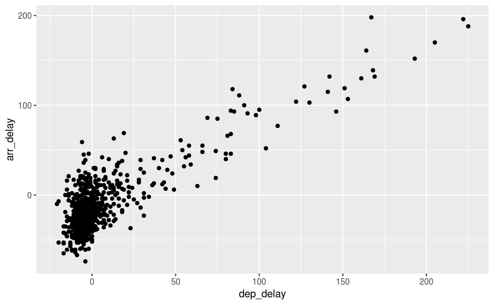

Only Alaska Airlines flights from nycflights13::flights.
alaska_flights
A data frame of 714 rows representing flights and 19 variables
Date of departure
Actual departure and arrival times (format HHMM or HMM), local tz.
Scheduled departure and arrival times (format HHMM or HMM), local tz.
Departure and arrival delays, in minutes. Negative times represent early departures/arrivals.
Time of scheduled departure broken into hour and minutes.
Two letter carrier abbreviation. See [airlines()] to get name
Plane tail number
Flight number
Origin and destination. See [airports()] for additional metadata.
Amount of time spent in the air, in minutes
Distance between airports, in miles
Scheduled date and hour of the flight as a `POSIXct` date. Along with `origin`, can be used to join flights data to weather data.
flights
# Scatterplot of arrival delay vs departure delay library(ggplot2) ggplot(data = alaska_flights, mapping = aes(x = dep_delay, y = arr_delay)) + geom_point()#> Warning: Removed 5 rows containing missing values (geom_point).